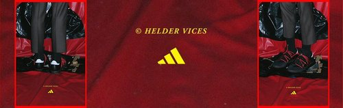
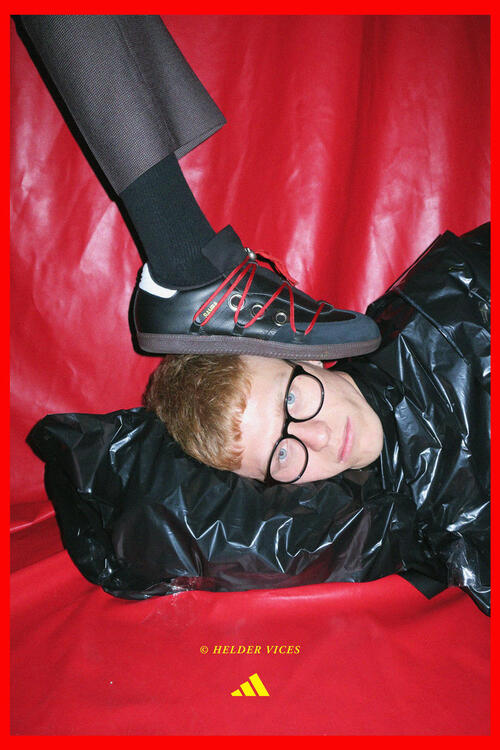
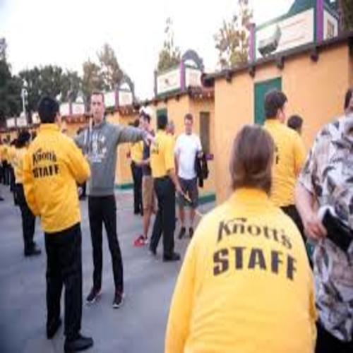

Dylan Nunez
First generation college student pursuing a bachelor's degree in Political Science at the
University of California Riverside.
Going back into my early childhood, school was the only educational resource my parents could provide me and in my early years. I was never given English language support. As I continued to navigate my educational path, being an English learner became one of the biggest barriers to my development. Not having the language prevented me from succeeding to my maximum potential in my early years of school both academically and socially. The importance of being fluent in more than one language in today’s diverse global society, is evident in all aspects of life. At my job, I am able to communicate, relate, and learn from people that speak Spanish. Having two languages has allowed me to represent my mexican american community and turn my educational barrier into an educational doorway.
With the current growth and availability of the internet around the world, it can provide people who have access to it with many educational opportunities. In today’s society, the internet is used on a daily basis for numerous purposes. My extensive use of it has helped shape who I am today and what I strive to develop in the future. I have the privilege to access this simple yet complex network known as the internet on my smart phone everywhere I go. I was first introduced to the internet in elementary school. We used computers and the internet to learn how to type, read, and write. During our free time then, my classmates and I would look for sites that were not blocked where we could play video games. Over time, my use of the network changed from playing video games to connecting socially with people both close and far. I soon realized that there is more to the internet than just social media. I discovered the concept of reselling clothes and shoes throughout different platforms. I found that there exists a high demand in this business sector. I have been able to build online stores throughout different platforms such as Grailed and Depop. I buy and sell highly anticipated items that range from clothing to shoes that are sold in limited quantities allowing me to resell these items at double or triple retail price. The internet has taught me how to develop and establish a business with a high yield. I have learned research skills using the internet that I have used to expand my business as well as to expand my knowledge. Because it is widely available, many universities offer online college courses free of charge to the public. I have taken advantage of some courses and used my research to expand my online business by hiring people to work for me using this same business model. The internet is a powerful platform that not only connects people across the world with one another, but also knowledge and opportunity. This experience has lead me to want to extend this knowledge onto a much more professional level. The small choices I’ve done so far have proved to be much more significant and keep pushing me forward.
With the current growth and availability of the internet around the world, it can provide people who have access to it with many educational opportunities. In today’s society, the internet is used on a daily basis for numerous purposes. My extensive use of it has helped shape who I am today and what I strive to develop in the future. I have the privilege to access this simple yet complex network known as the internet on my smart phone everywhere I go. I was first introduced to the internet in elementary school. We used computers and the internet to learn how to type, read, and write. During our free time then, my classmates and I would look for sites that were not blocked where we could play video games. Over time, my use of the network changed from playing video games to connecting socially with people both close and far. I soon realized that there is more to the internet than just social media. I discovered the concept of reselling clothes and shoes throughout different platforms. I found that there exists a high demand in this business sector. I have been able to build online stores throughout different platforms such as Grailed and Depop. I buy and sell highly anticipated items that range from clothing to shoes that are sold in limited quantities allowing me to resell these items at double or triple retail price. The internet has taught me how to develop and establish a business with a high yield. I have learned research skills using the internet that I have used to expand my business as well as to expand my knowledge. Because it is widely available, many universities offer online college courses free of charge to the public. I have taken advantage of some courses and used my research to expand my online business by hiring people to work for me using this same business model. The internet is a powerful platform that not only connects people across the world with one another, but also knowledge and opportunity. This experience has lead me to want to extend this knowledge onto a much more professional level. The small choices I’ve done so far have proved to be much more significant and keep pushing me forward.
Experience
Customer service
• Instruct and keep order among guest daily X
• Address guest with any questions or concerns
• Make sure guest have an enjoyable time
Server
• Ensure customers have pleasant dining experience
• Take orders, serve food and drinks in a timely manner
Volunteer
• Helped organize movements towards improving workers rights
Education
UC Riverside
Portfolio



